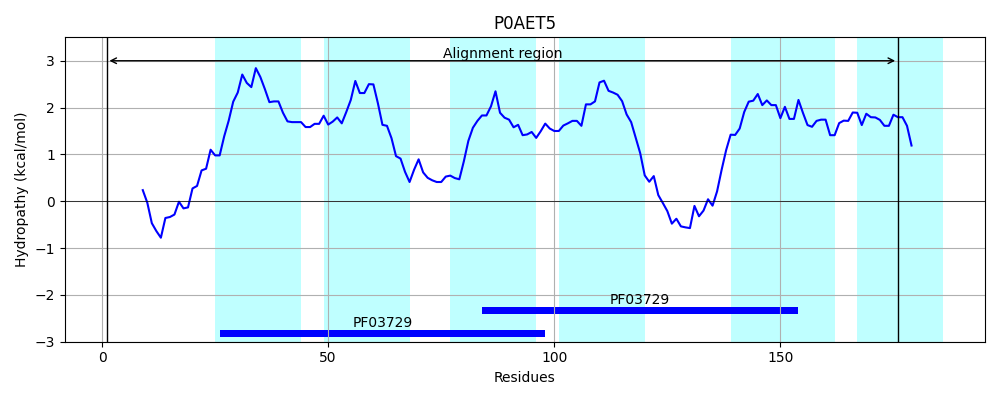
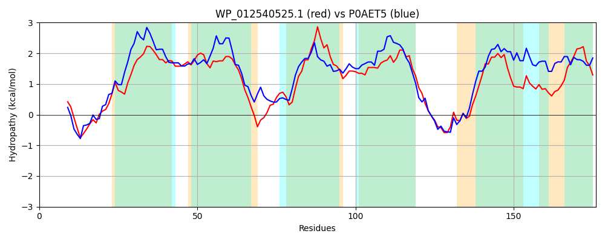

Hit Accession: P0AET5
Hit TCID: 9.B.36.1.1
Hit Description: gnl|BL_ORD_ID|8793 gnl|TC-DB|P0AET5|9.B.36.1.1 Protein hdeD - Escherichia coli.
Mach Len: 176
e:0.000000
Query TMS Count : 6
Hit TMS Count: 6
TMS-Overlap Score: 5.550000
Predicted Substrates:None
BLAST Alignment:
Score: 240 , Bit scores: 97 bits, E-value: 1.5e-25, Alignment length: 176, Percentage identity: 30
Query: 1 MFMFSHYTLNAFSPRIFLRYKRHAGMMAALLFICGACCLAWPLVAGWYLAVVTGMLLMICGFYSLYSLIVFRQQHWKSRLVALIFAIAWIVLGLSFVVNPLNGMSSLAILFGFLFVLGGISRIVSGCQTRKQSGAGWNIFIGLLDLLIACLWLAMNPQQSWLFITAFIGVEMIFSA 176
M T+ F + +++R +A LLFI G C+++P V+G L+ V G LL+ G + L R ++ L + A+A++++G F+ P G+ ++A LF + G+ R++S + R G+ + IG+LD++IA ++L P S ++ +G+E+IFSA
Sbjct: 1 MLYIDKATILKFDLEMLKKHRRAIQFIAVLLFIVGLLCISFPFVSGDILSTVVGALLICSGIALIVGLFSNRSHNFWPVLSGFLVAVAYLLIGYFFIRAPELGIFAIAAFIAGLFCVAGVIRLMSWYRQRSMKGSWLQLVIGVLDIVIAWIFLGATPMVSVTLVSTLVGIELIFSA 176 | Protein Hydropathy Plots: |
|---|
 |  |
Pairwise Alignment-Hydropathy Plot:
|
|---|
|  |